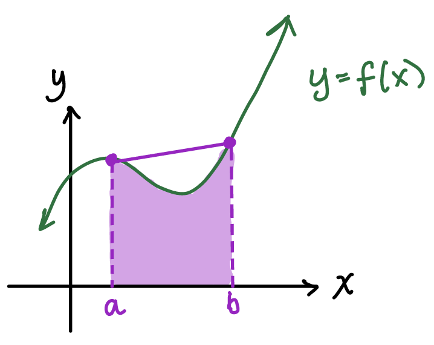
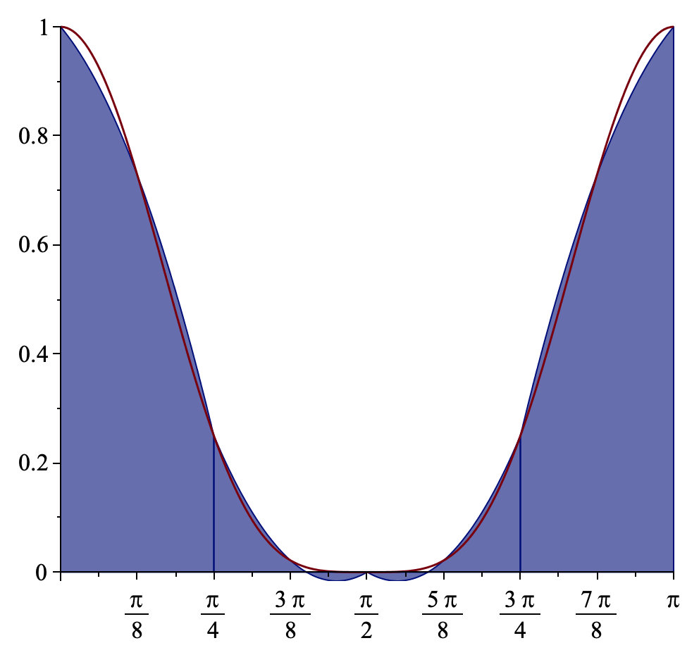
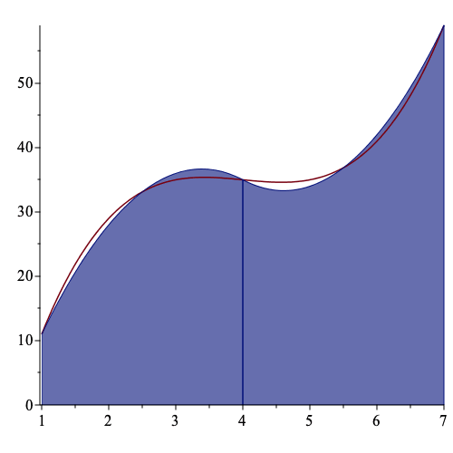

Numerical Integration
Before anything else, let us begin with a quick warmup of your integration skills: $$\int_1^2 \dfrac{1}{x}\,dx = ??? \hspace{20mm} \int_{\ln(4)}^{10} e^{-x}\,dx = ??? \hspace{20mm} \int (1+\tan^2(x))\,dx = ???$$ And here are the solutions and answers in case you are wondering:
- For the first one, know that the anti-derivative of $\frac{1}{x}$ does not follow the power rule since the exponent of $x$ is $-1$. We have learned instead that the derivative of $\ln(x)$ is $\dfrac{1}{x}$. And hence the anti-derivative of $\dfrac{1}{x}$ is $\ln(x)$. Thus we have: $$\int_1^2 \dfrac{1}{x}\,dx = \ln(x) \Bigg|_1^2 = \ln(2) - \ln(1) = \ln(2) - 0 = \ln(2)$$
- For the second one, this is simple as the derivative or anti-derivative of $e^x$ is simply itself. Thus, because we have a negative for the exponential, then by chain rule we take the sign into account as follows: $$\int_{\ln(4)}^{10} e^{-x}\,dx = -e^{-x} \Bigg|_{\ln(4)}^{10} = -e^{-10} + e^{-\ln(4)} = -e^{-10} + 4^{-1} = -e^{-10} + \dfrac{1}{4}$$
- Finally for the third one, recognize that Pythagorean identity for trigonometry is $\sec^2(x) = 1+\tan^2(x)$. Quite remarkable the anti-derivative of $\sec^2(x)$ is simply the tangent function. Since we are dealing with an indefinite integral in this question, then we do not evaluate at any point and leave it as is (and don't forget the constant of integration!) $$\int (1+\tan^2(x))\,dx = \int \sec^2(x)\,dx = \tan(x) + C$$
There are several various methods of Numerical Integration Approximation. The most basic ones include the Trapezoidal Rule and the Simpson's Rule, both of which are covered in this page. You may have heard about the Trapezoidal Rule during your Calculus II class but I'll give a refresher and more in-depth information.
The Trapezoidal Rule
The numerical approximation that goes about in Trapezoidal Rule is that we pick the two endpoints of the interval and we will be finding the "area under the curve" between these two given points (how integration can be interpreted). And in essence if it "falls below the $x$-axis" (i.e. becomes negative), then it's "area over the curve" (i.e. simply negative value of the area if it was reflected onto the other side of the $x$-axis). So take this arbitrary function as an example:


Notice the region that should not be highlighted. In the trapezoidal rule, this is expressed as an "error". In layman's terms adding the error to the approximation gives you the exact result (noting that the approximation can be either over or under the exact value; this means that the error could either be negative or positive). So in this case in our arbitrary example, since the Trapezoidal Rule failed to capture the exact value (which in most cases and approximation methods will) and instead over-approximated it, then the error is also positive (and a negative value of the error has to be added in to correct the approximation in order to get the exact result). Similarly, there may be instances when Trapezoidal Rule can under-estimate the approximation. In that case, the error turns out to be negative and that a positive version of the error needs to be added in to correct the result. And by the way, the graphs you see above are hand-drawn myself in my iPad app Notability; such an amazing app for taking notes.Before going any further allow me to introduce the Trapezoidal Rule: $$\int_a^b f(x)\,dx = \dfrac{h}{2} \Bigg[ f(a)+f(b) \Bigg] - \dfrac{h^3}{12} f''(\xi)$$ where $h = b-a$ and $a < \xi < b$. To make it clearer, the formula below $$\int_a^b f(x)\,dx = \dfrac{h}{2} \Bigg[ f(a)+f(b) \Bigg]$$ is the approximation formula for the Trapezoidal Rule and the formula below $$E(x) = - \dfrac{h^3}{12} f''(\xi)$$ happens to be the error. This means that the extra highlighted region in the above arbitrary example can be corrected by adding this error in. What makes this approximation formulas nice is that you wouldn't have to integrate anything. If anything, you only need to differentiate up to two times in order to get your results. It is indeed better and much easier to differentiate than to integrate. Perhaps we can have an example. Consider $f(x) = \cos^4(x)$. It is indeed better to differentiate this than to integrate, right? So let $a = 0$ and $b = \pi$. Thus $h = b-a = \pi-0 = \pi$. Also $f(a) = f(0) = \cos^4 (0) = 1^4 = 1$ and $f(b) = f(\pi) = \cos^4 (\pi) = (-1)^4 = 1$. Furthermore $f'(x) = -4\cos^3 (x) \sin(x) \Longrightarrow f''(x) = 12\cos^2 (x) \sin^2 (x) - 4\cos^4 (x)$. Hence approximating using Trapezoidal Rule we have: $$\int_0^\pi f(x)\,dx = \dfrac{h}{2} \Bigg[ f(a)+f(b) \Bigg] = \dfrac{\pi}{2} \Bigg[ 1+1 \Bigg] = \pi$$ And the Trapezoidal error to be: $$E(x) = - \dfrac{h^3}{12} f''(\xi) = - \dfrac{\pi^3}{12} \Bigg[ 12\cos^2 (\xi) \sin^2 (\xi) - 4\cos^4 (\xi) \Bigg] = -\pi^3 \cos^2 (\xi) \sin^2 (\xi) + \dfrac{\pi^3}{3} \cos^4 (\xi)$$ where $0 < \xi < \pi$. If we compute for the exact result using Definite Integration, we have: $$\int_0^\pi \cos^4(x)\,dx = \dfrac{3\pi}{8}$$ And the absolute error is simply the absolute value of the difference between the exact result and the approximated result, which happens to be $5\pi/8$.


Consider an example. So let us use the same one as earlier with $f(x) = \cos^4(x)$ using the same parameters and we'll have $n=8$ partitions. The default is usually $n=1$ partition, in which case reduces to the basic Trapezoidal Rule. So now $h = (b-a)/n = (\pi-0)/4 = \pi/4$. And we will be evaluating on $f(x_0), f(x_1), f(x_2), f(x_3), f(x_4), f(x_5), f(x_6), f(x_7)$ where $x_0 = 0$, $x_1 = \pi/8$, $x_2 = \pi/4$, $x_3 = 3\pi/8$, $x_4 = \pi/2$, $x_5 = 5\pi/8$, $x_6 = 3\pi/4$, $x_7 = 7\pi/8$. You would notice that the partition points happens to disect the interval $[a,b]$ into $n$ equal interval widths. $$f(0) = f(\pi) = 1, f(\pi/8) = f(7\pi/8) = 0.7286, f(\pi/2) = 0, f(3\pi/8) = f(5\pi/8) = 0.0214, f(\pi/4)= f(3\pi/4) = 1/4$$ And so $$ \begin{equation*} \begin{split} \sum_{j=1}^{n-1} f(x_j) & = f(x_1) + f(x_2) + f(x_3) + f(x_4) + f(x_5) + f(x_6) + f(x_7) \\ & = f \Bigg( \dfrac{\pi}{8} \Bigg) + f \Bigg( \dfrac{\pi}{4} \Bigg) + f \Bigg( \dfrac{3\pi}{8} \Bigg) + f \Bigg( \dfrac{\pi}{2} \Bigg) + f \Bigg( \dfrac{5\pi}{8} \Bigg) + f \Bigg( \dfrac{3\pi}{4} \Bigg) + f \Bigg( \dfrac{7\pi}{8} \Bigg) \\ & = 0.7286 + \dfrac{1}{4} + 0.0214 + 0 + 0.0214+ \dfrac{1}{4} + 0.7286 = 2 \\ \end{split} \end{equation*} $$ Thus our approximated result is $$\int_0^\pi \cos^4(x)\,dx = \dfrac{\pi}{16} \Bigg[ 1+2\cdot 2 +1 \Bigg] = \dfrac{3\pi}{8}$$ Notice, that this is a better result than what we got earlier. It is now similar to the exact result! It is not the same as equal per se but we know that as we get larger and larger values of $n$, the value tends to converge to the exact result that we get from definite integration. We see here that we get a better coverage:

The Simpson's Rule
Another rule for approximating integration is what is known as the Simpson's Rule, wherein its basic form requires three points instead of two: the two endpoints and the midpoint. If in the Trapezoidal Rule, you notice that trapezoids are formed during the partitions, in Simpson's Rule you form "mini-parabolas" (or somewhat parabola-like figures). Here is an illustration of the Simpson's Rule for some arbitrary function $y=f(x)$ and notice that it is indeed more refined than the Trapezoidal Rule. We also get more and more refined results for larger values of $n$ (i.e. when we adapt the Composite version that is analogous to the Composite Trapezoidal Rule):

When we examine the approximation formula, we shall notice that the error rate happens to make use of the fourth derivative. And one might observe that when applied to polynomials of degree three or less, the error happens to be 0 and you get the exact result. However, for Trapezoidal Rule since the error formula only deals with the second derivative, then only linear and constant functions give an exact result whenever the Trapezoidal Rule has been applied. Here is the approximation formula for Simpson's Rule: $$\int_a^b f(x)\,dx = \dfrac{h}{3} \Bigg[ f(a) + 4 f \Bigg( \dfrac{a+b}{2}\Bigg) + f(b)\Bigg]$$ where $h = (b-a)/2$. And the error term being: $$E(x) = - \dfrac{h^5}{90} f^{(4)}(\xi)$$ where $a < \xi < b$. And for the generalized composite version, we have the approximation formula: $$\int_a^b f(x)\,dx = \dfrac{h}{3} \Bigg[ f(a) + 2 \sum_{j=1}^{n/2-1} f(x_{2j}) + 4 \sum_{j=1}^{n/2} f(x_{2j-1}) + f(b)\Bigg]$$ and then its error being: $$E(x) = - \dfrac{b-a}{180}h^4 f^{(4)}(\mu)$$ with $h = (b-a)/n$ and $x_j = a+jh$ and $a < \mu < b$ for $j = 0,1,...,n$. Note however that (1) $n$ must be an even positive integer, and (2) when $n=2$, then the Composite Version is reduced to the Basic Version of the Simpson's Rule.To give an example, suppose we use the same example as above: $$\int_0^\pi \cos^4(x)\,dx$$ We'll solve this one using the Simpson's Rule, for (a) $n=2$ the Basic Version, and (b) $n=8$ for the Composite Version. The table below gives the results with the comparison to the Trapezoidal results. Note that the exact result is $\dfrac{3\pi}{8} \approx 1.178097$, correct to 6 decimal places.
| Integral Rule | Basic Version | Composite Version $(n=8)$ |
|---|---|---|
| Trapezoidal Rule | 3.141593 | 1.178097 |
| Simpson's Rule | 1.047198 | 1.178097 |
Try this numerical integral calculator I have developed. Note that if you would like to use the basic version of the rules, then you have to enter $n=1$ and $n=2$ for the Trapezoidal Rule and Simpson's Rule respectively. Also note that you will get an error if you entered a non-integer, an odd, or a non-positive for $n$ if you are using the Simpson's Rule. The same rule applies for the Traprezoidal Rule except odd positive integers are allowed. In typing your functions, most functions are able to be inputted (polynomials, trigonometric, logarithmic, exponential, etc.). Also, careful about discontinuities and as this calculator is not meant for handling improper integrals. I will cover improper integral approximation in a future write-up. So for instance the integral of $\ln(x)$ in the interval $[0,1]$ is improper because the function is not defined at 0. Let me know for bugs.
Numerical Integral Calculator
$\displaystyle \int\limits_I$ $\,dx = $ 1.570796
where $I = \Bigg[$$,$$\Bigg]$ and $n = $ .